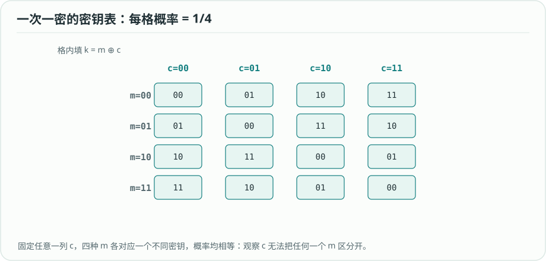
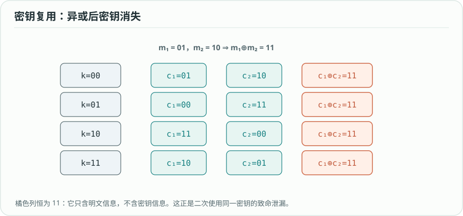
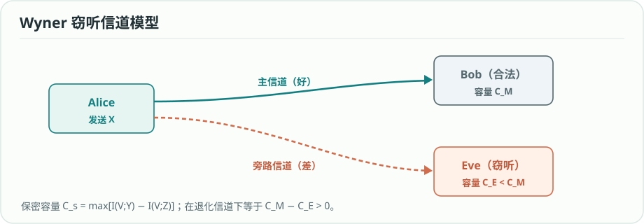

怎样把“安全”写成一个可检验的等式？
日常说的“加密够了”很模糊。Shannon 在 1949 年的《保密系统的通信理论》里把窃听者建模成一个只能看到密文 C 的观察者，并把“安全”定义成一条关于条件分布的陈述：看到 C 之后，对手对明文 M 的不确定性不应该比看之前更少。
这个定义是信息论意义的，它不关心对手的计算速度——即使对手有无穷算力也拿不到信息。代价是：这种“绝对安全”对密钥有很苛刻的要求，正是本章要推出的下界。
完善保密的两种等价说法
完善保密（perfect secrecy）的标准定义：对任意明文 m 和密文 c 满足 P(M=m)>0、P(C=c)>0，都有
三个式子等价：后验等于先验，条件熵等于无条件熵，互信息为零。也就是说 M 与 C 统计独立。注意互信息为零只说明统计独立，它不等于“不相关”（相关只描述二阶矩）；这里用熵和互信息是因为它们对任意分布都有定义。
一次一密为何能达标？
一次一密（one-time pad, OTP）把明文、密钥、密文都当作等长的比特串，加密就是逐位异或：c=m⊕k，解密 m=c⊕k。只要密钥 K 均匀分布、与 M 独立，且每次只用一个新密钥，它就是完善保密的。
证明只有一行：对任意固定密文 c，
关键在第一步：已知 C=c 时，M=m 当且仅当 K=m⊕c；因为 K 独立于 M，这个条件概率就是 K 取某个固定值的概率 2⁻ⁿ，与 m 无关。图 18-1 用 2 比特情形展示了：无论明文是什么，密文都是均匀的，后验与先验完全相同。

密钥必须至少和消息一样长
Shannon 还证明了一个必要条件。记密钥 K 的熵为 H(K)，则完善保密强逼：
推导只用三条事实。第一，完善保密给出 H(M|C)=H(M)。第二，把二者联合熵展开：H(M,K|C)=H(M|C)+H(K|M,C)=H(M)+0，因为明文、密文一旦都已知，密钥就被唯一确定（K=M⊕C）。第三，换一个顺序展开同一个量：H(M,K|C)=H(K|C)+H(M|K,C)=H(K|C)+H(M)，因为给定密钥与密文，明文也被唯一确定。两式相等即 H(K|C)=H(M)；再由“条件不增熵” H(K|C)≤H(K)，就得到 H(K)≥H(M)。
换句话说，如果密钥的熵比消息的熵小，就不存在任何编码/加密方案能做到完善保密——一定存在某种后验偏离先验的情况。这是密码学里最早的不可能性定理之一。
复用密钥如何摧毁一次一密
一次一密的“一次”二字不是装饰。如果用同一个密钥 k 加密两条不同明文 m₁、m₂，得到 c₁=m₁⊕k、c₂=m₂⊕k，那么两段密文异或后密钥直接抵消：
结果完全不含 k。若明文是自然语言文本，m₁⊕m₂ 会保留大量统计结构，用互相关或频率分析就能把两段明文逐步剥离出来。图 18-2 用一个 2 比特算例展示：无论 k 取何值，c₁⊕c₂ 恒等于 m₁⊕m₂。

历史上，美方在二战后的 VENONA 项目中之所以能解读相当一部分苏联情报通信，原因之一就是部分一次性密码本的密钥材料被制造/分发时重复使用，违背了“一钥一用”。这提醒我们：信息论意义上的安全对实现纪律极为敏感。
从窃听信道到差分隐私
如果不用预共享密钥，而靠信道本身的物理特性保密，就是 Wyner 1975 年提出的窃听信道（wiretap channel）：合法接收者 Bob 收到 Y，窃听者 Eve 收到 Z。保密容量的一般形式是

| 安全模型 | 威胁假设 | 保证 | 典型构造 |
|---|---|---|---|
| 完善保密 | Eve 算力无限 | I(M;C)=0 | 一次一密 |
| 计算安全 | Eve 多项式时间 | 破解需不可行算量 | AES、RSA、椭圆曲线 |
| 信息论安全（wiretap） | Eve 信道比 Bob 差 | I(M;Z)→0 | 保密编码 |
| 差分隐私 | Eve 知道其他人全部数据 | 单记录影响有界 | 拉普拉斯/高斯噪声 |
差分隐私不直接出自 Shannon 信息论，但同样是在量化“一条记录能泄漏多少信息”：一个机制满足 ε-差分隐私，指相邻数据集（相差一条记录）上任意输出集合的概率比被限制在 eᵋ 之内。它度量的是单条记录对结论的最大影响，而非明文—密文互信息。
量子密钥分发（QKD）利用量子测量扰动来检测窃听，可以看作完善保密性在量子域的延伸；物理层安全则把 wiretap 信道理论用到无线信道的空间特性上，是 5G/6G 的研究方向。
把验证与失效写成可测试代码
本仓库的 Python 样例实现按位一次一密、密钥复用异或以及最小熵，并用固定算例断言。
from examples.foundations import (
otp_encrypt, otp_decrypt, otp_reuse_xor, min_entropy)
m, k = [1,0,1,1], [0,1,1,0]
c = otp_encrypt(m, k)
assert c == [1,1,0,1]
assert otp_decrypt(c, k) == m
assert otp_reuse_xor([0,1], [1,1]) == [1,0] # 与密钥无关
assert min_entropy([0.5,0.25,0.25]) == 1.0 # -log2(1/2)固定 m₁=01、m₂=10；无论 k 取何值，两段密文异或都不变，这就是密钥复用的泄漏点。
下一章换一个目标：不再追求“一字不差”，而是允许一定失真，问“在给定的失真下，最少需要多少比特”。这就是率失真理论。